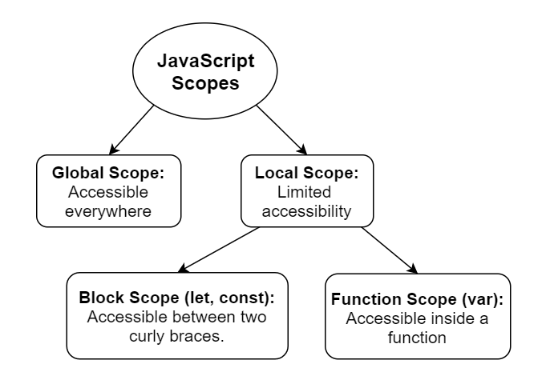

Scope of Variable
a Variable is a named container with a unique name for storing date values. the statement below declares a variable with the name "car":
console.log(car); // undefined
in javascript, variable are initailized with the value the of undefined when they are created. you can assign a value to a variable using the assignment operator (=) when you declere it:
console.log(car); // volvo
alwas initailize your variable before using them or you will get an error:
let car= "volvo"
ECMAscript 2015 (or ES6) introduced toe new ways of declating variables. let and const. the reason for the new keyword was becaues the function scoping of var confusing. it was one the main sourcse of bugs in javascript
scope:-
by scope, we are talking about the visibility of variables in the defferent parts of the code during runtime. or in other words which parts of code can access and modify a variable.
in javascript thare are two a=eay types of scope:
- global scope
- local scope
what changed with modern javascript (ES6+) is the way we are use variables in the locel scope.
global scope:-
a variable declared outside a funtion becomes global. this measns it cab be accessed and modified everywhere in the code.
we can declare constants in the global scope: